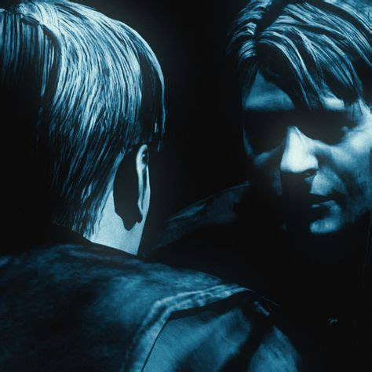
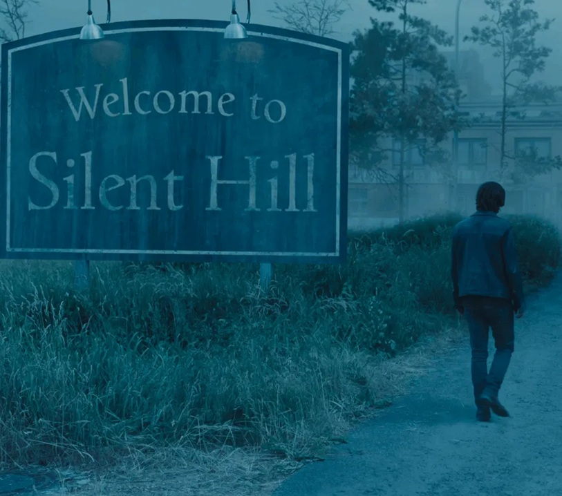
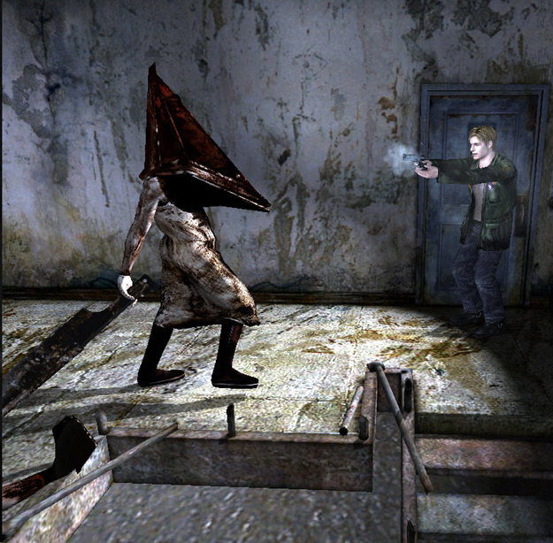
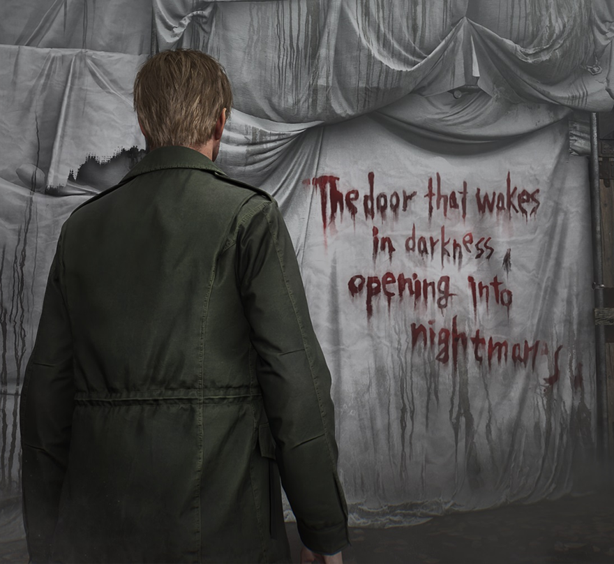
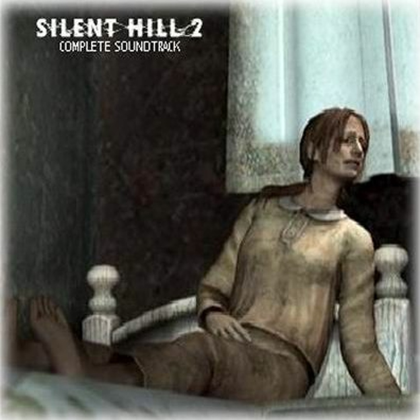
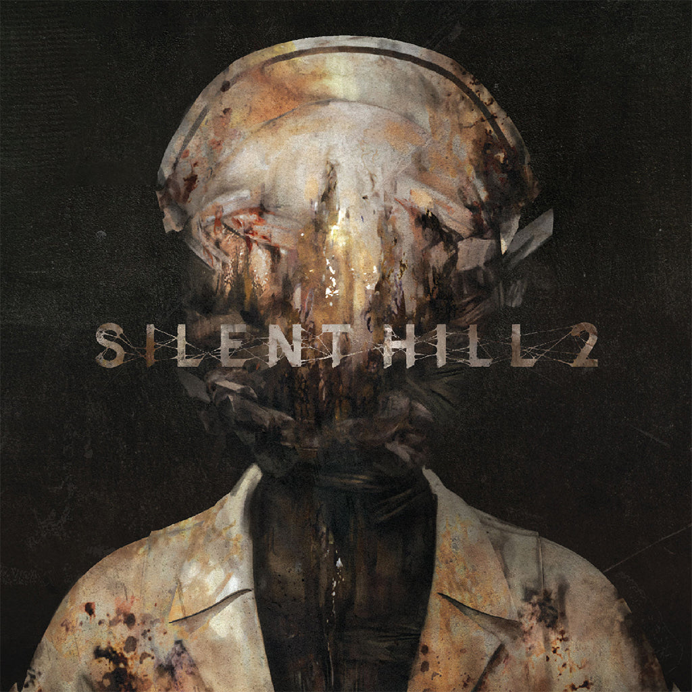

You're listening to "Theme of Laura (Reprise)" by Akira Yamaoka!
Official Konami website for Silent Hill 2 -->  |
Official website for the Return to Silent Hill movie based on Silent Hill 2 -->  |
Wikipedia for Silent Hill 2 -->  |
Wikipedia for the 2024 Silent Hill 2 Remake -->  |
Youtube link for the Silent Hill 2 Original Soundtrack by Akira Yamaoka -->  |
Youtube link for the 2024 Silent Hill 2 Remake Original Soundtrack by Akira Yamaoka -->  |